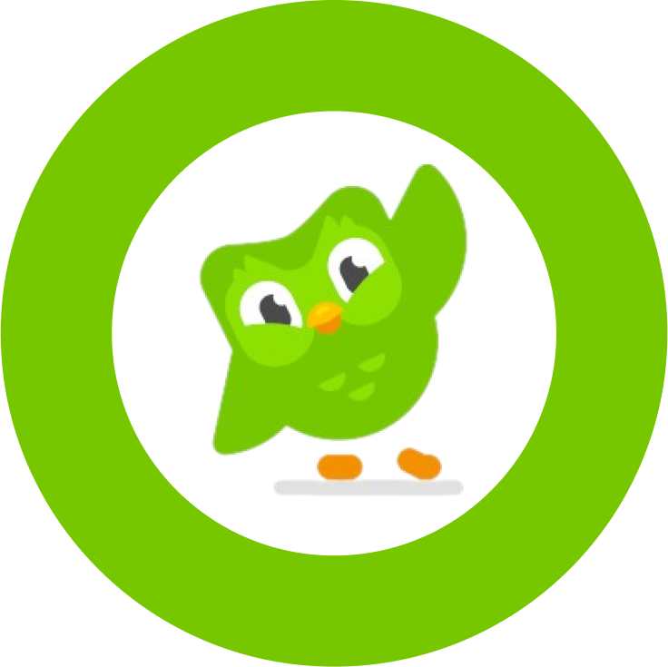

Code.org on the Go
A mobile application for Code.org's CSF Express curriculum
My Role(s)
Project Manager
UX Designer
UX Researcher
External Links
Figma Prototype
Introduction
Code.org is an educational, nonprofit organization that strives to make computer science education accessible to students all
over the world, with a focus on diverse and underrepresented populations. Code.org wants to make CS education as accessible as
possible, and with the majority of the world's population owning 4G phones, there's an opportunity to expand exposure to CS
curriculum in lower-income regions and diverse populations through these mobile devices. The goal of our work with Code.org is
to design a mobile version of their Computer Science Fundamentals (CSF) Express curriculum for kids from 2nd to 8th grade in
the global South. We expect our prototype to be customizable, exploratory, rewarding, and user friendly to meet our young users'
needs. In the long term, we hope our project will be able to help kids in the global South develop their programming skills by
using the mobile version of Code.org's CSF Express curriculum.
Feel free to play with our mobile prototype! If you're using a phone, make sure it's in horizontal mode. (Note that because the
app is designed for a large Android screen, it may not perfectly fit your phone. That's alright! You can still play through it
just fine). If you're on a laptop or desktop computer, use your mouse or trackpad to navigate through the app.
Note: Any mention of “client” in this page refers to Code.org.
The Plan
We had a tight 6-month timeframe in order to get this project done. As the Project Manager (PM), I utilized waterfall timelines
to create a plan that outlined when each part of the project should be completed to ensure that our team of five completed the
project on time.
These were the main stages of our research:
- Initial Research. This consisted of a competitive analysis and a literature review surrounding the scope of our project. We also conducted a cognitive walkthrough of our client's CSF Express curriculum.
- Phase 1 Research. This is when we conducted our first round of in-person/remote qualitative user interviews.
- Phase 1 Design. Based on the findings from our Phase 1 research and client feedback, we designed an initial prototype of the mobile application.
- Phase 2.1 Research. We tested our initial prototype with end users through in-person qualitative interviews.
- Phase 2.1 Design. Adjusted the prototype based on findings from Phase 2.1 research and client feedback.
- Phase 2.2 Research. A smaller scale of Phase 2.1 research, with the goal of refining the prototype and focusing on the big picture.
- Phase 2.2 Design. Refined prototype based on findings from Phase 2.2 research and client feedback.

Tools Used
We used Dovetail to transcribe and code our user interviews, FigJam to create our affinity map and synthesize our data, and Figma to create our prototype.
Initial Research
Competitive Analysis
We looked at seven different online learning platforms, each dedicated to teaching students a defined curriculum. In particular, we looked
at how competitors kept their users engaged through gamification within their mobile application and how they designed their mobile
interfaces to effectively deliver their curriculum.
We utilized Nielsen's Heuristics, Wharton's Cognitive Walkthroughs, Krug's usability principles, and Jill Butler's Universal Principles of
Design to inform the design of an intuitive and feedback-rich mobile coding interface, ensuring an optimal user experience.
| Competitor | Who are they? | Why did we select them? | What can we learn from them? |
|---|---|---|---|
| Direct Competitors | |||
|
MakeCode |
Microsoft MakeCode is a free online learn-to-code platform where anyone can build games, code devices, and mod Minecraft. They offer block-based coding for beginners and text-based coding for intermediate and advanced learners. Users go through step-by-step tutorials to complete projects and learn computer science concepts. | MakeCode is targeted to middle schoolers, which is the same target demographic as Code.org. They offer coding opportunities of all proficiency types, including block-based coding for beginners. They also teach students how to code by having them complete projects, similar to some of the projects on Code.org's website (not in the CSF curriculum). | All of MakeCode's projects are tutorial-based to teach students CS concepts. Code.org can do a similar thing within their CSF Express website to teach code using guided projects. They also have defined learning paths based on how users rate their own coding proficiency. Because Code.org's CSF curriculum is a free-roam experience, having a defined pathway can help to tailor the curriculum to the individual user. |
|
Tickle |
Tickle is a block-based coding app on IOS devices that teaches young users how to code. They let users have full freedom to code whatever they want. They also have the option of coding external robots. | Tickle's target audience matches that of Code.org's. They both have the same goal of teaching code, and both use block-based coding to deliver this content. Additionally, both applications give users control in the curriculum to a certain extent. While Tickle gives users freedom to code whatever they like, Code.org let's users pick whatever activity they want to do within the CSF Express curriculum. Code.org also offers their end-of-course project, where users have the freedom to code anything they desire, just like with Tickle. | Code.org could integrate external devices like robots for users to control. This would add an extra opportunity to teach users not only CS, but robotics as well. | Indirect Competitors |
|
Grasshopper |
Grasshopper was a mobile coding application by Google. They taught text-based coding to beginners through small puzzles. They taught code to an older target audience, and their approach is through text-based coding like JavaScript. Their goal was to help users learn code to develop new skills, or shift to another career field. Unfortunately, Grasshopper shut down in June 2023. | With well over 1.6 million installs, Grasshopper had identified itself as a substantial mobile learning app on the Google Play store. Their mobile app UI was an important consideration as to why they were chosen for our competitive analysis. | Grasshopper gave the user a base pathway for them to follow. Offering users a pathway gives them a sense of direction on where they could go without restricting the free-roam experience. |
|
Tynker |
Tynker is a learning application that teaches kids how to code using drag-and-drop blocks. Their goal is to provide every child with a foundation in computer science, programming, and critical thinking skills. | Their target audience lines up with Code.org's, and they teach block-based programming. They also offer advanced courses for programming languages, data science, art, and image processing. | Their wide range of courses allow more users to be interested in Tynker. While Code.org has a variety of courses in CS topics on their website, it's not integrated into their CSF Express curriculum. In doing so, we can connect more users with their interests and increase exposure to CS. |
|
Mimo |
Mimo is a mobile application that provides lessons in numerous coding languages, including HTML, CSS, JavaScript, and Python. They offer courses for people of different levels of expertise and use short lessons to keep users engaged. | They teach coding languages and introductions to basic web development. When signing up, users can select where they are in their coding journey and can select what specific language or course they want to learn. | Mimo offers user pathways based on their coding proficiency level and what they want to learn. Code.org has something similar implemented into their CSF curriculum by grouping different courses based on grade level. Instead, providing users pathways based on their proficiency level can better give users a more fulfilling experience with Code.org. |
|
SoloLearn |
SoloLearn is an online platform and an app that provides students and professionals an opportunity to learn a new coding language. | Users have a wide variety of courses to choose from. Once they complete their course, they get a certificate to show off their accomplishment. They use text-based coding, and have a reliable mobile app. | Defined user pathways are important to tailor the curriculum to the individual. Code.org could showcase the user's accomplishments when they complete a certain part of the course. As of now, they show a certificate after they complete the Express course from their website. | Influencer |
|

Duolingo |
Duolingo is a language learning platform that provides free online courses on many languages around the world. They encourage students to learn using a reward-based system (points, experience, etc.). | Duolingo is one of the most successful learning apps on mobile, partly due to the amount of gamification elements that exist within the app. Each element motivates users to continue learning and make progress within the app's course. | Code.org can implement a system that motivates users to complete activities on the Express page and reward them for their progress. |
Literature Review
We conducted a literature review to understand some of the current research surrounding mobile learning, gamification, and the culture around technology in the global south — specifically in Latin America, India, and Africa.
Summary of Findings
Guiding Questions
We identified and addressed guiding questions related to learning models, gamification, clearly defined pathways, feedback mechanisms, user motiva- tion, and user experience. These guiding questions were used as the basis for our research.
CSF Express Course - Cognititve Walkthrough
The main objective of the cognitive walkthrough was to understand the keyboard experience and how it could be implemented in an app
version. The ultimate goal is to migrate the client's web curriculum into a mobile application, while bringing over the same look and feel.
Based on our initial research and this cognitive walkthrough, the following was kept in mind for the prototype:
- Keep the freedom of completing any activity (in a broader sense, keep the essence of the client's website the same)
- Introduce gamification to motivate users to complete activities (addresses Guiding Question #1)
- Encourage user creativity through block-based coding (the current CSF Express course has an end-of-course project where users can code whatever they want. Incorporate something like this into the prototype)
- Encourage users to explore different areas of CS concepts to reach a wider range of audiences (addresses Guiding Question #3)
- Provide content in multiple formats to account for different learning styles (addresses Guiding Question #1)
- Tailor the curriculum to address multiple coding backgrounds (addresses Guiding Question #2)
Phase 1 Research and Design
Interviews
For today's kids to be successful in the future, our client believes that they will need to learn basic computer science concepts and
coding. The goal for this phase of research was to inform the initial design of our mobile prototype through qualitative user interviews.
We focused on learning:
- Parents and children's beliefs and attitudes towards computer science in schools, and if they feel they will need to learn coding or computer science to be successful later in life
- What gamification strategies and UI elements children respond positively to and why
- When children were provided access to mobile devices, and what limitations parents placed on those devices. Was this consistent between games and educational applications?

Synthesis
After conducting the interviews, we coded each transcript. This coding process involved categorizing participant's responses based on
overarching themes. Each team member coded multiple interviews outside of our own to ensure that we had a comprehensive analysis and
to avoid overlooking significant information. The team utilized Dovetail for coding transcripts and gathering insights.
Once all of our transcripts were coded, we imported the tagged quotes into FigJam and created our affinity map. Quotes were grouped
based on their tag. Through this, we were able to see patterns throughout the responses and generate our findings based on these
patterns.
Findings
Scroll though our findings and how we implemented them into our prototype here!
The first step is to create an account. Create a username and select an avatar. Future log-in screen to show many profiles on a single account, like Netflix.

The next step is to choose your path. Start from the beginning, or test out of some lessons.

The questions are based on topics from Code.org’s curriculum.

On Code.org, the CSF course is broken down by grade. We eliminated that factor and instead place users based on how well they understand the CS topics offered.

Our gamification relies on participants completing lessons and activities to earn stars. They can use the stars to customize their avatar.
During the interviews, having the ability to customize an avatar was brought up by almost all participants.

Easily access the profile from the main navigation at any point.
Navigation
Home, Explore, Playground and Profile were the top four navigation choices we needed participants to have clear and easy access to.

Characters on the right, closet on the left, and new items to purchase just a downward scroll away.

The ‘Keyboard’ is made up of the instructions, tool box, workspace, and output. The coding blocks live in the tool box, and can be tapped on and dragged over to the workspace. We needed it to be intuitive and easy to use, and it helped drive a horizontal screen for the experience.

Kids like to be creative, and learning through play is one of the best ways to learn. Users can use a template from the inspiration section, or create their own experience using the code they've learned.

Like how every toy has its cubby, the different types of coding blocks have their own labeled drawers.

Where areas of interest and computer science intersect. Giving kids the chance to learn how computer science and coding are used almost everywhere can help drive the relevance of learning computer science. For example, Artificial Intelligence is modeled after what Code.org has on their website, with a call out to their AI for Oceans activity.

Carousel UI for course topics. Each topic block has a lighter and color line portion, to denote how ‘complete’ a specific topic is. There's also a call-out for the current amount of stars.

Going from web to mobile, we wanted to keep the same hierarchy of lessons but changed the presentation. Here, we are in the topic of Sequencing and can see the four different lesson plans.

Similar to Duolingo, we implemented a treasure map so participants can see how far they have progressed on the lesson. Although it's cutoff in this screenshot, users can scroll down to see the full map.

Much of the workflow was also adapted onto the mobile experience, like this congratulations message after the user completes an activity.
Phase 2.1 Research and Design
Interviews
The goal of this phase of research was to test our prototype and make significant changes based on client and user feedback
through qualitative user interviews. We closely observed user interactions with the application prototype. Participants
explored the designed app's features and UI elements, allowing us to deeply understand thoughts, preferences, usability,
strengths, and areas for improvement. Open-ended interviews gathered valuable qualitative data about impressions, likes, and
dislikes, guiding efforts to enhance user-friendliness.
Our main areas of focus:
- Test out our primary navigation.
- How the web translated to mobile; from AI for Oceans to new features like the playground.
- If it was intuitive to all; ensure that the language was appropriate for kids in 2nd-8th graders.
- Verify UI elements and placement were appropriate for the screen positioning (e.g. vertical scrolling, light bulb icon, etc).
- Directions and tutorial - how kids use them vs what we thought they would do.
- Star system/gamification techniques - did it match what kids wanted and what they expected.
- If it was an immersive experience where kids had full control. Would they rather be guided?
- Verify the avatar and closet match what kids want/expect.

Synthesis
We synthesized the findings to find the current strengths and weaknesses of our prototype. We focused on:
- Whether the prototype was intuitive and where they got stuck
- Users' opinions about the home screen
- Reward system
- Exploration aspects (the Playground)
- Connecting CS concepts with other fields of interest (Explore articles)
- The keyboard functionality
Findings
|
Phase 1 
Phase 2.1 
|
Clearer Wording
Participants weren’t sure what a placement test was, so we adjusted the wording to make it clearer. Important information is bolded and in a separate color to make it stand out. Accessibility Reader Throughout the application, this icon is available for users to tap. |
|
Phase 1 
Phase 2.1 
|
Visual Questions
Similar to how Code.org asks their questions, we opted for a more visual approach on how the questions were delivered. |
|
Phase 1 
Phase 2.1 
|
Description of Stars
This is where users are first introduced to stars, so we gave a brief description of where and how they can be used. |
|
Phase 1 
Phase 2.1 
|
Streaks
Per client’s request (and additional support from initial research) we added streaks to increase user motivation to consistently engage with the app and its contents. Help Icon All help functionalities are in one place for users to access throughout the app. Topics Scroll Opted for a more focused view to avoid information overload. Added progress bars for transparency. Vertical scroll is now intuitive Moved up content so that it shows above the nav bar. With this added feature, users understood that they could vertically scroll. Navigation Bar New version is seamless, yet distinguishable. All icons are labeled. Larger area to click on in the prototype. |
|
Phase 1 
Phase 2.1 
|
Connections
Every lesson has a progress bar to show individual progress. Dotted line visually shows where users could go. Similar to the dotted line in the activity path page. Breadcrumbs At the top of each heading, there's a path that shows the user how they got to that certain screen. This gives them clarification on where they are within the app and how they can navigate to other parts. Topic Description Every topic has a brief description of what the activities are about. |
|
Phase 1 
Phase 2.1 
|
Need more space!
Decreased the size of circles and numbers so that it more can be seen at once. Moved the legend to the bottom of screen. Continuity Added a progress bar at the top of the screen for additional information. |
|
Phase 2.1 
|
Tutorials in the Playground
The playground has a tutorial to get started. It doesn’t tell the user what they should create, and instead lets them know how to use the elements on the screen. Tutorial Design The tutorials have counters and screen readers for accessibility. |
|
Phase 2.1 
|
Tackle Different Learning Types
|
|
Phase 2.1 
|
Article Questions
Used to keep users engaged with the material and to ensure they understand the material. |
Phase 2.2 Research and Design
Interviews
Our primary goal was to test several interventions throughout the application at the “10K-ft” level. These included:
- Addressing the main navigation to be more intuitive
- Improving on existing UI elements for directions and tutorials to include counters
- Making the visual language of the application more consistent
- Adding a trashcan into the main activity
- Mirroring Minecraft with a more interactive tutorial for personal projects.

Synthesis
We used the same process as our Phase 2.1 synthesis. Overall, our analysis illustrated a positive interaction between the participants and the application, and most of the functionality seemed to flow. While we had our own limits within the prototype that participants noted, they did not seem to find large changes that would need to be acted upon.
Findings
Most of our participants really like sports and video games, and we suggest adding more articles about how computer science
impacts sports and video games.
In the previous round of interview, there were suggestions about adding more languages to the read-out-loud function, but in
this round, none of the participants were fluent in other languages. Therefore, additional research into how bilingual
speakers would want to use the application should be done.
Similar suggestions were given about the instructions, as we may want to implement language options to users who prefer
instructions in different languages.
In the playground, while some participants wanted to be able to make changes to project examples, others didn't want to
because they worried that they would mess it up. To meet their needs, we can give them an option to copy the project examples
and make changes without changing the original work.
The other challenge that some participants faced was the reading part of the article. We could consider giving them an option
to adjust the size of the texts to enhance user experience and accessibility.
Additionally, participants were sometimes confused about how to delete a project. We added a trash can to address this issue.
Future Iterations
Streaks
We would like to further flesh out how streaks would work throughout the participant experience. While participants self-reference Duolingo's streaks of 10 days, other numbers ranging from 5 to 20 days were mentioned. We also would recommend identifying a balance to what part of the experience is used to count as a streak.
Sharing with Friends
In the playground section, participants noted how they would want to share the projects they make. Parents and kids do note the
anxiety and worry around online communications with potential strangers, and even sharing a project could be problematic. If
there were a sharing feature within the application, it would need to ensure the safety and privacy of the user, whilst also
making sure that the shared project is appropriate. Code.org could do a workaround of this by offering a submission process where
they evaluate projects and offer to showcase a certain number of projects a month for other end users to see and use as a template.
Adding a notice, via a modal or button, about saving the project should also be incorporated into the design for extra transparency.
Automatic Vertical Scrolling
Because of the horizontal layout of the application, we didn't have a lot of vertical space to work with. We weren't able to fully outline how longer instructions or blocks of code would fit within the screen. In both areas we would encourage using a vertical scroll component, as this is consistent with navigation on the application. Allowing the sections to autoscroll when users run code would also highlight the importance of debugging in block-based coding. When users run their code, they can see exactly where the animation is within the code and make changes faster and easier.
Text-based Coding
After completing the main coding activities, users see a popup that shows their block-based code converted into text-based. Participants generally indicated that they would want to learn text-based coding, and we would encourage Code.org to look at how they might leverage this design to implement it. This could be achieved with the same look and feel, but instead of blocks, participants could be presented with a word bank that they would drag and organize in the workspace appropriately.
Specialty Skins for Purchase
As participants have been vocal about enjoying the opportunity to customize their avatars and projects, Code.org could elevate partnerships with other organizations by offering specialty skins for users to purchase with in-game rewards, similar to Fortnight. Even for the main activity with Angry Birds, Code.org can incorporate other birds, pigs, and creatures from that franchise within their lesson plan and in the avatar customization.
Dynamic Avatars
Due to the static assets we were provided with, we were not able to make the user's selected avatar more dynamic as we had originally hoped. We encourage our client to incorporate avatars more throughout the application and user experience.
Additional Languages
Some of our participants were multilingual, and brought up the possibility of having multiple languages integrated into the UI. A participant expressed that they would like the audio to be one language, and the written text in another. Code.org could look into how end users could quickly change the audio and visual language of the application independently. Additionally, some more research should be done to verify if custom controls at a more micro level would be appropriate.
Conduct Research with more Targeted Demographics
One of the objectives of this application is for it to be used in lower-income regions including Africa, Latin America, and India. Unfortunately, due to the timeframe and resources given, we were not able to interview students from these regions, and instead would encourage our client to conduct research within those populations and identify any specific needs that were not addressed within the prototype.
Conclusion
Code.org on the Go is a user-friendly application that encourages young students to explore computer science through a mobile
version of the CSF Express curriculum on Code.org's website. Our prototype is a proof-of-concept that successfully migrated the
web curriculum into mobile whilst keeping the gameplay the same and adding features that would encourage new users to start.
Based on the findings from the six months of research, synthesis, and insights, we answered our initial guiding questions and
addressed each of our goals for the prototype.
| Goal | Code.org on the Go |
|---|---|
| Guiding Question #1: How might we provide instruction in multiple forms through gamification to encourage different types of users to progress through the material? |
The main instruction is delivered through the main activities. To encourage users to complete activities consistently,
we introduced streaks. Our qualitative research and literature review showed that streaks motivated users to continue
using the app for longer periods of time. However, we would encourage there to be additional user testing to identify
best practices for streaks.
We also implemented a reward-based system by providing users with stars any time they complete an activity. Stars can be used to customize their avatar in their profile to tailor the app to the individual. There was strong evidence from our competitive analysis (which was later supported by our own qualitative research) that showed that providing rewards encourages users to continue using the app. In terms of instruction delivery, the Explore section of our prototype provides the content through multiple forms to ensure that users of all learning styles are able to grasp the material thoroughly. Articles are shown in video, audio, and kinesthetic format. Most forms of instruction within the app can be read outloud using the screen reader. Note that because this wasn't defined within our client's project scope, we did not flesh out this functionality. |
| Guiding Question #2: How might we ensure that the application provides personalized learning experiences to meet the unique needs of each user, and help them achieve their learning goals effectively? | To address the varying proficiency levels of each user, we incorporated a decision tree upon opening the app for the first time. The decision tree helped to tailor the curriculum to multiple CS backgrounds while still keeping the freedom of attempting every activity. When signing up, users have the option to take a skills test to test out of some of the easier activities in the curriculum. This helps to tailor the curriculum to the user's coding proficiency level. Additionally, users can test out of a topic by passing a short test on the topic. This ensures that users can accelerate their learning without missing out on important concepts. |
| Guiding Question #3: How might we encourage users to explore diverse topics and subject areas beyond their current interests and skill levels, and help them discover new areas of knowledge and expertise? | The Explore section was designed specifically to tackle this question. We took some of the interests that participants mentioned in our first phase of research and added them as articles within this section. The purpose of this was to connect participants' interests with CS concepts in the hope that more users could connect with the material easier. |
| Keep the essence of the client's website the same. |
The CSF Express curriculum is designed to be a free-roam experience for users of all experience levels. We kept this level of
freedom by letting users have the choice to select any activity they'd like. While there are some guides on where users could
go, they don't restrict the user from selecting any part of the app.
For the main coding activities, we kept the same drag-and-drop functionality in the mobile prototype. It was important to keep this seamless between the website and the mobile app so that it was easy for users to transition between the two. |
| Encourage user creativity through block-based coding. | The Playground section was designed in a way to encourage users to create whatever they'd like through the block-based coding functionality. We expanded upon the end-of-course project within the CSF Express curriculum by including project examples for inspiration. However, in our prototype, users can save their projects, and can make as many as they'd like without being restricted to one theme. |
Impact
Our prototype incorporated a space for children to have the freedom to create, and attempted to connect a vast variety of common interests with computer science to pique their interest. With streaks and stars, children showed interest in using the application consistently. In addition to these changes, we kept the essence of the CSF Express gameplay and ensured that the UI was intuitive for both experienced and new users. We believe that this application will help our client connect with a wider audience and get more students interested and involved in computer science.
Reflection
This project spanned across six months, and there was a lot to accomplish within that time frame. All communication was done via
Slack, and I ensured that our team knew exactly what we were doing each week, what needed to be done, and why. We met through
Zoom twice a week to go over progress on different aspects of the project and to make sure that everyone was aware of what was
happening. I used waterfall timelines to detail when each phase of the project should be completed in order to present our research
to our clients on time. During team meetings, I reiterated things to complete by the end of that week and what to expect by our
next meeting. This information was also sent in our Slack channel at the end of each meeting.
I also managed regular and transparent communication between our team and our client, who we met online bi-weekly, to ensure that
our work was meeting our stakeholder's expectations. Any concerns or feedback we had throughout the project were brought up in a
timely manner and were addressed immediately. In terms of the softwares we used, I corresponded with our program administrators to
get proper licenses for the software we were using.
I made sure that all documentation was properly recorded in a shared Google Drive folder. I maintained a comprehensive, detailed, and
up-to-date documentation of our project plans. Everything was organized properly and was easily accessible on all forms of communication.
All project milestones were delivered on time consistently, thanks to our prioritization of project goals. This was a struggle for me at
first. Oftentimes, I would inaccurately estimate how long a part of the project was going to take, and this led to a fluctuating timeline.
However, as I learned more about the logistics of each phase of research and design, I was able to tighten the schedule and make our
timeline more efficient and reliable.
Delegation was also something that I initially struggled with but gradually improved. I knew my team members' backgrounds and areas of
expertise, so I knew who could successfully do what. However, because this was a graduate program, I debated the idea of having the entire
team participate in each phase of the project so that everyone could get experience in each area. The biggest downside to this was that we
needed to set a longer timeframe for each phase of the project to account for learning curves. After some feedback from my team, I learned
that I needed to prioritize the project deadlines first, and to delegate roles based on everyone's prior experience and skills. This
significantly improved team efficiency, and we were able to deliver our project milestones easier.
As I reflect on my experience as a Project Manager, I feel a sense of accomplishment and personal growth. I would say that my biggest
strengths as a PM were administrative work and time management, and my biggest weakness was delegation of project responsibilities. From the
way our work was divided, I contributed significantly to the design and research portion of the project on top of my responsibilities as a
PM. While that may not be how a traditional PM role looks like, I was glad that I could contribute to the core elements of our project and be
a reliable team player.
This experience has imparted valuable lessons about project management, teamwork, and communication. Looking ahead, I aim to further enhance
my leadership skills and continue refining my delegation abilities to become an even more effective guide for future teams.
A Message from Code.org
"We could not have asked for a better team to help Code.org explore the world of mobile. Aditi, John, Emily, Hazel, and Nika took their role
and our mission seriously. Their work will help inform and guide us as we continue to find new and innovative ways to expand our audience and
the possibilities of computer science education."
- Mark Barrett, Principal Product Designer
"Great work on the project team. You exemplified iterative development, stayed user-focused, and developed innovative approaches to address
uncharted territory. The classroom model is undergoing a dramatic shift as mobile & self-paced resources become increasingly more important
vectors to empower global learning & adoption. Your project lays the groundwork to enable Computer Science education globally, and I’m eager to
see the progression of not only this app, but also your careers as you take your project, learnings, and skills into the real world. Thank you
again for all of your hard work and wishing you the best on behalf of all us here @Code.org."
- Ali Vira, Sr. Product Manager
Mark Barrett, Principal Product Designer
Aditi Kisara | Emily Nugent | Hazel Zhou | John Nolan-Moso | Nika Niksefat